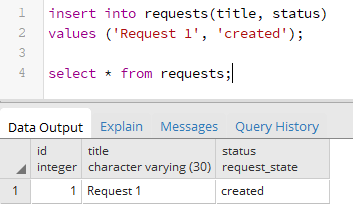

Перечисления enum
PostgreSQL имеет специальный тип данных, который называется enum и который представляет набор констант. И столбец подобного типа может в качестве значения принимать одну из этих констант. Рассмотрим, как использовать перечисления.
Для создания перечисления используется команда CREATE TYPE. Например, создадим простейшее перечисление:
Данное перечисление называется "request_state". После слова enum в скобках указывается через запятую список констант, которые составляют данное перечисление. То есть в данном случае перечисление request_status может принимать три значения: 'created', 'approved', 'finshed'.
После создания перечисления мы можем использовать его в качестве типа столбца. Например, создадим следующую таблицу:
Здесь третий столбец - status представляет перечисление request_state и может принимать одно из трех выше указанных значений. Поэтому при добавлении данных нужно указать для данного столбца одно из этих трех значений:
При этом важно, что столбец может иметь только одно из этих трех значений, а не какие-то произвольные значения. Кроме того, большую роль играет регистр символов, например, "created" не эквивалентно "Created".
При обновлении данных также необходиом предоставить одно из значений перечисления:
Изменение перечисления
После создания перечисления вполне возможно нам захочется его изменить, например, добавить новое значение. Для этого применяется команда ALTER TYPE.
Добавление нового значения:
К сожалению, удалить так просто уже имеющееся значение из перечисления не получится. В этому случае мы можем создать новое перечисление и указать, чтобы таблица использовала именно новое перечисление:
Удаление
Если перечисление больше не нужно, то с помощью команды DROP TYPE его можно удалить: